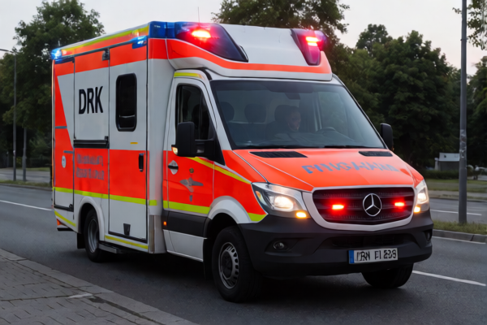
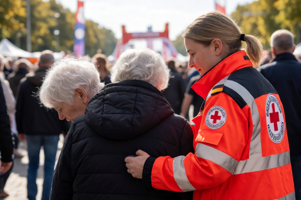
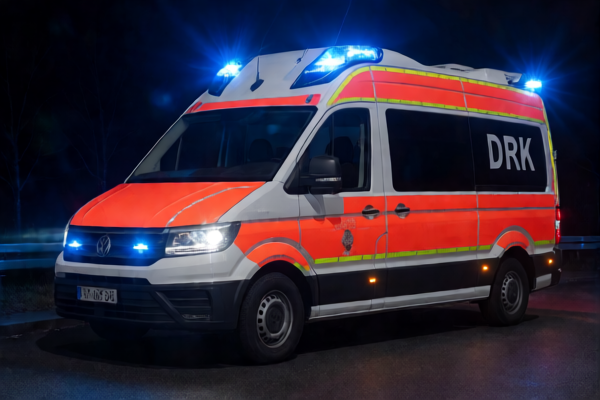
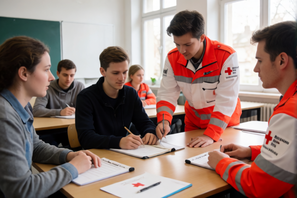
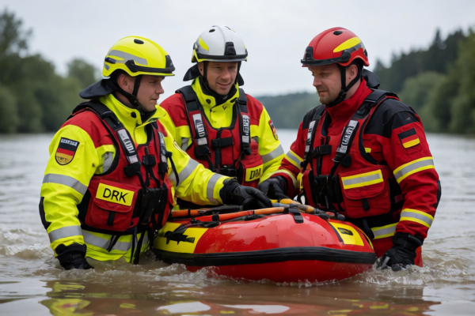
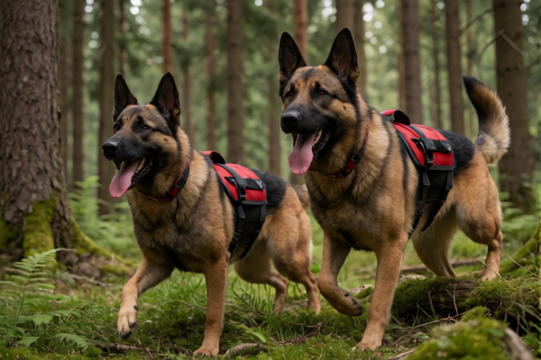
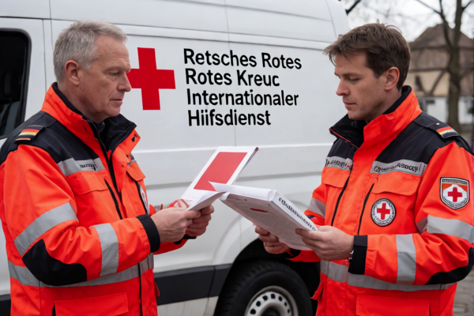
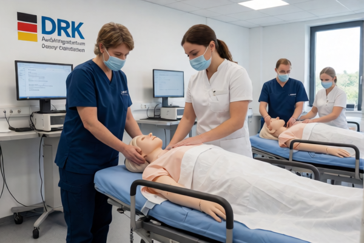

Humanitare Hilfe in Bayern und weltweit – Mit Ihrer Unterstotzung retten wir Leben.
Jetzt Spenden →Das BRK ist einer der groBten Humanitaren Hilfsverbande Deutschlands. Seit uber 130 Jahren steht das BRK fur Menschen in Not – in Bayern und weltweit.
BRK-Mitglieder leisten taglich Rettungsdienst, Sanitatsdienst bei GroBveranstaltungen und Katastrophenhilfe – rund um die Uhr.
Bei Naturkatastrophen, Pandemien und humanitaren Krisen weltweit: Das BRK ist vor Ort und bringt Hilfe dorthin, wo sie am dringendsten benotigt wird.
Von der einfachen Erste-Hilfe-Kurs bis zum Katastropheneinsatz – das BRK bietet eine professionelle, anerkannte Ausbildung in allen Rettungsbereichen.
Speziell ausgebildete Sanitaetshunde helfen bei der Suche nach Vermissten unter Trummern – eine einzigartige Einheit von Mensch und Tier.
Das Bayerische Jugendrotkreuz (BJRK) fordert Jugendliche ab 6 Jahren in erster Hilfe, Sozialem Engagement und Teamarbeit.
Das BRK ist in Bayern der groBte Zivilschutz-Verein. Bei Hochwasser, Stromausfall oder Pandemen ist das BRK die erste Instanz.
Das BRK ist taglich im Einsatz – in Bayern und weltweit. Ihr Geld kommt direkt vor Ort an.
Uber 2.000 BRK-Kraft eingesetzt zur Rettung und Versorgung der betroffenen Bevolkerung.
BRK-Mitglieder haben an Testcentern, Impfungen und dem Rettungsdienst mitgewirkt – taglich hunderte Einsatze.
BRK-Teams in Tuerkei, Marokko und weiteren Lاندern vor Ort bei der akuten Nothilfe und dem Wiederaufbau.
Oktoberfest, Marathon, Konzerte – das BRK ist an hunderten Veranstaltungen jahrlich mit Sanitaetspersonal vor Ort.
Jeder Euro kommt direkt der humanitaren Hilfe zugute. Das BRK ist von der Finanzverwaltung als gemeinnutzig anerkannt – Ihre Spende ist absetzbar.
Spontane Unterstotzung – wahlbar in beliebiger Hoehe.
Regelmaessige Unterstotzung – monatlich, vierteljaehrlich oder jahrlich.
Sie konnen jederzeit rueckfragen oder aendern.
Mehr auf brk.de →Ihr Vermachtnis sichert die Zukunft humanitaren Hilfe.
Kostenfreie Beratung durch das BRK-Justizamt.
Spenden-Benachrichtigung: Das Bayerische Rote Kreuz ist gemeinnutzig und berechtigt zu offiziellen Sammeln. Spenden sind bis zur hoechsten vom Finanzamt anerkannten Hoehe absetzbar.
Aktenzeichen: 88/401/03491 (Finanzamt Muenchen)
Bei uber 90.000 Ehrenamtlichen in Bayern – ob als Rettungssaniter, Jugendleiter, Sanitaetshundefuhrer oder im Katastrophenschutz: Bei dem BRK findet jeder seine Aufgabe.
Lerne Rettungssanitiertausbildung und fahre taglich Einsatze mit Rettungswagen und Notarztwagen.
Idee: Ab 18 Jahren, mittlerer Schulabschluss.
Das Bayerische Jugendrotkreuz bietet Programme ab 6 Jahren: Ersthilfe, Soziales, Sport und Ausfluge.
Idee: Ab 6 Jahren – frag deinen Kreisverein.
Als Fuhren arbeitet du mit deiner speziell ausgebildeten Hund auf der Suche nach Vermissten.
Idee: BRK-Mitglied + abgeschlossene Grundausbildung.
Bildung für GroBschadenslagen – von der Organisation am Lagewagen bis zum technischem Einsatz vor Ort.
Idee: Regelaemisches Einsatztraining im Kreisverein.
Gebe dein Wissen weiter – unterrichte Ersthilfe-Kurse, fahre Lehrgaenge oder bilette Rettungssaniter aus.
Idee: Berufserfahrung + pädagogisches Interest.
Geh in den Auslandseinsatz – humanitare Hilfe bei Naturkatastrophen, Pandemien oder im Entwicklungshilfe.
Idee: Min. 1 Jahr BRK-Erfahrung + Sprachkenntnisse.
Besuchen Sie Ihre lokale BRK-Website oder schreiben Sie an: mail@brk.de
Oder nutzen Sie das BRK-Kontaktformular auf der Offiziellen BRK-Website.
Einsaetze, Ausbildung und Humanitäre Hilfe des BRK in Bayern und weltweit.







